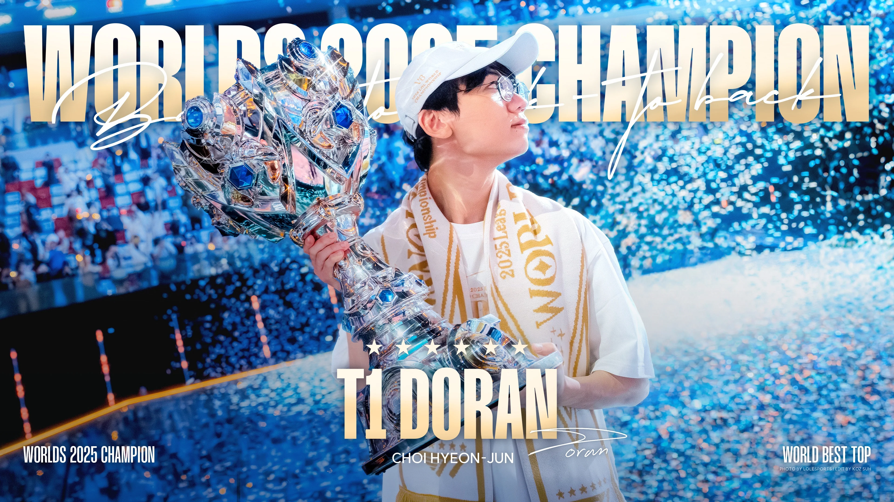

On the international stage, Doran reached the pinnacle of competitive League of Legends with T1, becoming a World Champion. His relentless frontline pressure and tactical teamfighting provided crucial victories on the biggest stage.
For his commemorative Worlds Championship skin, Doran highlighted signature champions like Ambessa, featuring distinct red and gold flame effects matching the iconic T1 identity.
